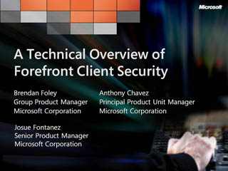
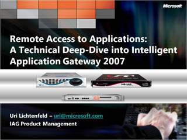
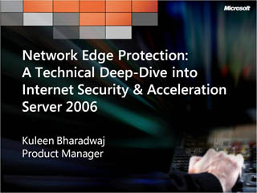

You're in Control: Manage Complexity, Achieve Agility, Secure Your Environment
 Speaker(s): Bob Muglia
Speaker(s): Bob Muglia
Anti-Malware Protection A Technical Deep-Dive into Forefront Client Security


Speaker(s): Brendan Foley, Anthony Chavez
Managing Messaging and Collaboration System Threat Protection: A Technical Deep-Dive of Forefront Server Security
 Speaker(s): Joe Licari, Neetu Rajpal
Speaker(s): Joe Licari, Neetu Rajpal
Remote Access to Applications: A Technical Deep-Dive into Intelligent Application Gateway 2007

Speaker(s): Uri Lichtenfeld
Network Edge Protection: A Technical Deep-Dive into Internet Security and Acceleration Server 2006

Speaker(s): Kuleen Bharadwaj
End to End Service Management: Technical Best Practices with System Center Operations Manager 2007
 Speaker(s): Robert D. Reynolds
Speaker(s): Robert D. Reynolds
Plan, Build, and Deploy: Technical Best Practices with SMS 2003 and System Center Configuration Manager 2007
 Speaker(s): Dan Ward
Speaker(s): Dan Ward
Unified Management for Midsized Businesses: A Technical Overview of System Center Essentials 2007

 Speaker(s): David Mills
Speaker(s): David Mills
Data Back-up and Recovery for SQL, Exchange, and Vista Information: A Technical Overview of System Center Data Protection Manager

 Speaker(s): Jason Buffington
Speaker(s): Jason Buffington